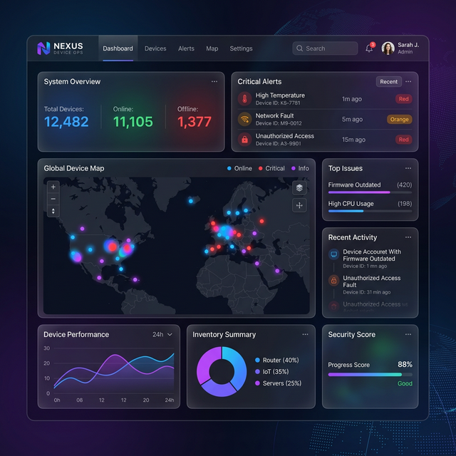
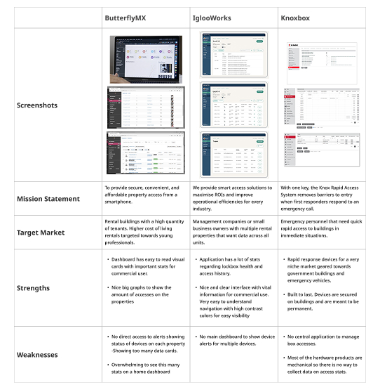
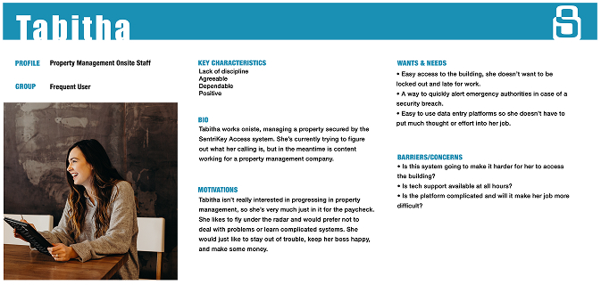
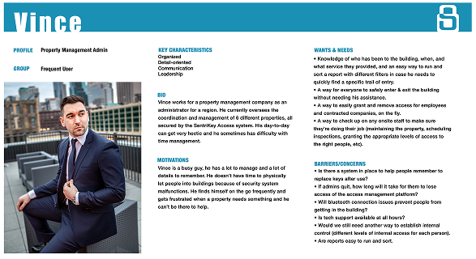
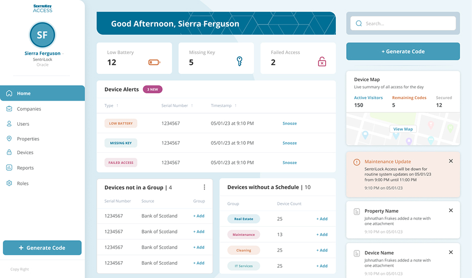
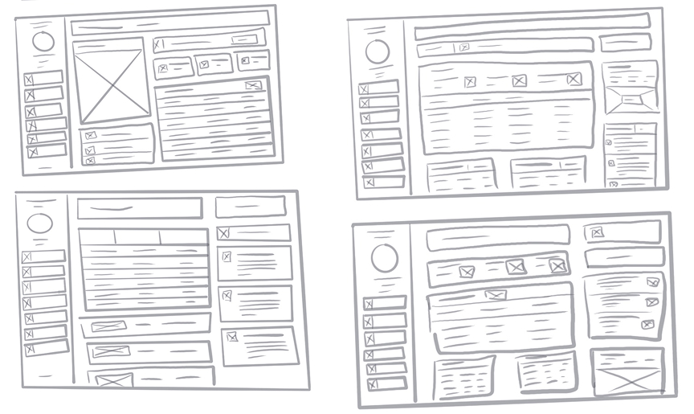

Key Management Dashboard Reimagined

Project Overview
I concentrated on optimizing the SentriKey Access+ web app's home dashboard, specifically targeting device, alert, and note discovery. The solution involved refining user interactions through intuitive categorization, precise labeling, and a streamlined design.
Furthermore, our forward-thinking approach guarantees scalability for accommodating future features, with usability testing and user feedback affirming the design's effectiveness.
Centralized
Alert Discovery
Iterative
6 Design Cycles
Background
Access+ is a critical application that facilitates access to commercial buildings via smart lockboxes for service workers. It serves as a centralized hub for parent companies, offering streamlined access to device alerts and client note submissions.
This functionality significantly reduces response times by providing swift access to essential notifications, logs, and reports associated with each device.
My role encompassed extensive research, UI design, and comprehensive testing for all project-related user interfaces. Collaborating closely with cross-functional teams including product, engineering, and quality assurance, we successfully launched this project.
"The goal was to create a centralized hub that guaranteed scalability for future features while drastically reducing response times for critical device events."
Competitive & User Research
In order to assess the competitive landscape, I conducted a thorough analysis of three competing products to determine if they offered a similar dashboard feature for their customers. Upon analyzing these competitors, it became evident that Access+ stood out in the market by focusing primarily on commercial access, distinguishing itself from residential-focused alternatives.

While operating in the pre-beta stage, we lacked immediate access to current users for testing purposes. Consequently, I relied on the personas developed from data sourced from legacy users and use cases provided by stakeholders who maintained direct interactions with our user base.


The design of the Access+ Home Dashboard was influenced by extensive research into best practices and the inclusion of vital features like missing key and low battery alerts, based on insights gained from our legacy application's performance.

Wireframes & Prototyping
The design process began with low-fidelity wireframes, which provided an initial grasp of screen real estate. Subsequently, we transitioned to mid-fidelity wireframes to concretize the product vision. Throughout this phase, we created six iterations with a focus on scalability to accommodate future features.

Priority was given to highlighting device alerts, displaying nearby devices on a map, and effectively managing note notifications to align with business objectives.
Validation through Prototypes
To validate and communicate the design concept effectively, I developed multiple prototypes. These prototypes were presented to stakeholders and underwent iterative improvements based on valuable feedback.
The key takeaways from these discussions were the emphasis on prominently featuring the map for device maintenance and prioritizing missing key alerts over other device alerts. These insights informed my design iterations, leading to a more refined solution, which was subsequently presented to stakeholders in a follow-up meeting.